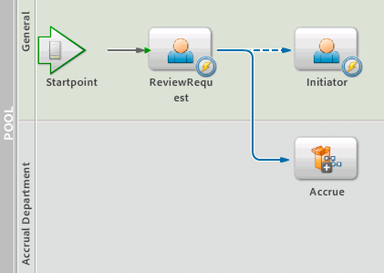
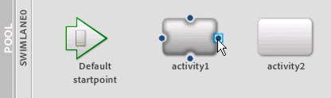

|

Specifying the start activity of a process
A
start activity
is the entry
point into a process and is the first activity to occur when a process
starts. Every process must have a start activity. Otherwise, the process
will start and end at the same time. A start activity can be an
operation or an event. There can be only one start activity in a
process diagram, where the start activity appears with a green arrow
on its left side.
By default, the first operation you drag onto a process diagram
is set as the start activity. You can then set any other operation
or event in the process diagram to be the start activity. When you
set the start activity, a route is automatically drawn to it from
the start points.
To specify the start activity in a process diagram:

Perform one of the following actions:
Drawing routes to link operations
Routes
represent
the order in which operations on the process diagram are executed.
Two operations can be connected using a route to represent a sequential
flow. Routes begin at one operation and end at the operation that
is to be executed next. Arrowheads indicate the order of progression.
Routes can also begin and end at activity elements, events, and
gateways.
Multiple routes can originate at a single operation. However,
within in a branch, only one route can be followed, and a decision
needs to be made to determine how to proceed:
-
Each route is evaluated to determine whether it is valid.
-
The first route that is found to be valid is followed.
-
The order in which the routes are evaluated is configured
at design time.
Conditions
are logical expressions that can be associated
to routes and are evaluated at run time to determine whether a route
is valid. Conditions typically compare values against data that
is gathered at run time so that decisions are made based on the
context of the process instance. Routes can have multiple conditions.
Routes that have conditions appear as dashed lines, and routes that do
not have conditions are solid lines.
Note:
Routes that do not have conditions are always
valid.
For example, a company’s internal process for requesting purchases
is automated using LiveCycle ES2.5. To start the process, a user
fills and submits a form using Workspace. The user’s manager opens
the form in Workspace and selects an option to either decline or
approve the purchase. The decision determines the next operation
in the process, which is to either return the form to the originator
(the purchase is declined) or to send the form to the accrual department
(the purchase is approved).
On the process diagram, the decision is represented by two routes
that originate at the same operation. One route has a condition
associated with it that evaluates whether the manager denied the
purchase. If the condition is true (the request was denied), the
route is followed. If the condition is false, the other route is evaluated.

Dashed route indicates a condition
When no valid routes are found after an operation is complete,
the process is complete. Therefore, when multiple routes originate
at an operation, typically one of the routes is not given a condition
and is evaluated last. This route is followed by default if the
other routes are evaluated and found to be invalid. This design
ensures that the process continues to progress after the operation
is complete.
Each route has a name that you can customize to provide meaning.
Typically, the name provides insight into the condition that is
associated with the route. Route names can also be exposed as form
submission options for Workspace users. (See
Providing actions for submitting tasks
.)
Adding and deleting routes
You
add routes between elements in a process diagram to specify the
order in which they are executed.
You can draw one or more routes from any element. You can also
draw routes to the same originating operation, event gateway element,
or activity element to represent iteration. To draw a route between
two elements, both elements must already exist in the process diagram.
Default route names do not appear in the process diagram. You
must give the route a name for text to appear for a route. (See
Modifying route labels
.)
Note:
When you add an event as a start point, a route
is drawn to the element that is set as the Start Activity.
You can delete any routes that you longer no require in your
process.
To add a route:
-
In the process diagram, select an
existing operation, event, activity element, or gateway element
where you want the route to begin. The route anchors appear on the
element.
-
Pause the pointer over a route anchor until the pointer changes
to a pointing hand icon.

-
The anchor that you use to begin drawing the route determines
the direction of the route and the order in which the route is executed.
-
Drag the pointer to the operation, event, activity element,
or gateway element until you see the hand icon appear on the anchor
where you want to terminate the route.
A
route appears that connects the two elements.
-
(Optional) In the Process Properties view, provide a name
and description:
-
In the Name box, type a name for
the route.
-
In the Description box, type text to describe the route.
To delete a route:
In the process diagram, delete
the route by performing one of the following tasks:
-
Right-click the route and select Delete Route.
-
Select the route and in the toolbar, click Delete
, press
the Delete key, or select Edit > Delete.
Modifying route shapes
You can modify the shape of a route by
dragging the originating element or terminating element from one
location to another in your process diagram.
This action will modify the shape of your route. For example,
a route drawn from one operation to another in a process diagram
may look like the following illustration.
After moving the execute1 operation to the right, the route’s
shape changes to accommodate the new position of the operations.
You can also select the route and drag any grip point to modify
the shape of the route. A
grip point
is a black dot that
appears on the selected route.
If you need to reorder your operations, you can drag the start
or the end point of the route to another element in the process
diagram. To do that, pause your pointer over the grip point at the
beginning or end of the route until the hand icon
appears,
and then drag the point to another element.
Modifying route labels
You
can modify the text and position of route labels to make the process
diagram more meaningful. When you add a route, default text is provided.
A route label only appears when you modify its default name.
Important:
Any route label name that has the text
“route” will not appear in the process diagram.
To modify the text and position of a route label:
In the process diagram, select a route and modify its label
text or position, or both:
-
In the Properties box,
in the Name box, type a new name for the route.
-
Move the route label from its default position on the route
to another area in the process diagram.
Making decisions using routes
This section provides information about the following topics:
Routing condition format
Routing
conditions consist of three parts, in the following format:
expression1 operator expression2
Expressions consist of values from the process schema or form
data, or are derived from data values by using functions. The operator
defines the required relationship between the two expressions. The
expressions must be of the same data type.
For example, if you want to follow a route only if the value
in a purchase amount form field is greater than 5000, the condition
would be as shown here:
PurchaseAmt > 5000
You can create complex expressions for specific routing conditions
to adhere to the required business logic in your processes.
Routing conditions cannot be set on routes that originate from
a start point event.
Adding and modifying routing conditions
To
add a condition, a route must already exist in the process design.
You can modify routing conditions any time after you create them.
You add and modify routing conditions in the Process Properties
view.
To add or modify a routing condition:
-
In the Process
editor, select a route.
-
In the Process Properties view, click the Conditions category.
-
If you are adding a routing condition, click Add Route Condition
 . If
you are modifying a routing condition, select an existing condition
and click Edit Selected Route Condition
. The
Route Properties dialog box appears.
. If
you are modifying a routing condition, select an existing condition
and click Edit Selected Route Condition
. The
Route Properties dialog box appears.
-
In the Expression box on the left, type the first part of
the expression. If the condition is complex, click the ellipsis
button
 to
display the XPath Builder.
to
display the XPath Builder.
-
In the Operation list, select an operation.
-
In the Expression box on the right, type the second part
of the expression. If the condition is complex, click the ellipsis
button to display the XPath Builder.
-
Click OK to close the Route Properties dialog box.
-
If you have more than one routing condition in the Conditions
category, select the join condition to determine how the conditions
are evaluated:
-
Use AND Join For Conditions means the
route is valid only if all the conditions evaluate to
True
.
-
Use OR Join For Conditions means the route is valid when
one or more of the conditions evaluate to
True
.
The
default join condition is Use OR Join For Conditions.
Specifying the order of routes
When several routes originate at one
step in a process, you need to specify the order in which the routes
are evaluated. The process follows the first route where the routing
condition evaluates to
True
.
Specifying the order of the routes is important when multiple
routes can potentially evaluate to
True
, but one
route should be taken instead of the others according to the business
logic you want to implement.
You specify the order of routes in the Process Properties view.
To specify the order of routes:
-
Select an operation
or event from which multiple routes originate.
-
In the Process Properties view, click the Route Evaluation
category. The routes are displayed in the order they are evaluated,
first to last.
-
To sort the routes, select a route and click the Move Route
Up or Move Route Down button.
|
|
|

 If you need operations to execute in multiple
branches simultaneously, use a gateway. (See
If you need operations to execute in multiple
branches simultaneously, use a gateway. (See